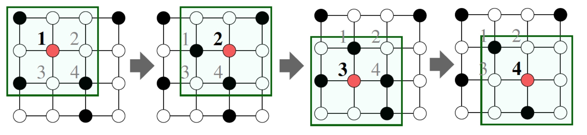
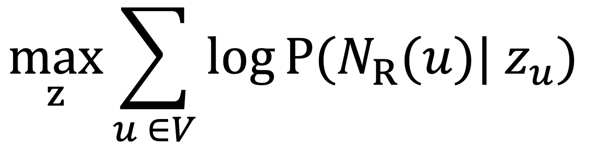

<!DOCTYPE html>
<html lang="zh">
  <head>
    <meta charset="utf-8">
    <meta http-equiv="X-UA-Compatible" content="IE=edge">
    <meta name="viewport" content="width=device-width, initial-scale=1">
    <title>
      
     - 
    
    </title>
    
    
    
    <link href="atom.xml" rel="alternate" title="" type="application/atom+xml">
    <link rel="stylesheet" href="asset/style.css">
    
</head>
  <body>


        <div id="wrapper">
            <header class="site-header">
                <div class="container">
                    <div class="site-title-wrapper">
                          <a class="button-square" href="index.html">
<svg class="svg-inline--fa fa-home fa-w-18" aria-hidden="true" focusable="false" data-prefix="fas" data-icon="home" role="img" xmlns="http://www.w3.org/2000/svg" viewBox="0 0 576 512" data-fa-i2svg=""><path fill="currentColor" d="M280.37 148.26L96 300.11V464a16 16 0 0 0 16 16l112.06-.29a16 16 0 0 0 15.92-16V368a16 16 0 0 1 16-16h64a16 16 0 0 1 16 16v95.64a16 16 0 0 0 16 16.05L464 480a16 16 0 0 0 16-16V300L295.67 148.26a12.19 12.19 0 0 0-15.3 0zM571.6 251.47L488 182.56V44.05a12 12 0 0 0-12-12h-56a12 12 0 0 0-12 12v72.61L318.47 43a48 48 0 0 0-61 0L4.34 251.47a12 12 0 0 0-1.6 16.9l25.5 31A12 12 0 0 0 45.15 301l235.22-193.74a12.19 12.19 0 0 1 15.3 0L530.9 301a12 12 0 0 0 16.9-1.6l25.5-31a12 12 0 0 0-1.7-16.93z"></path></svg>
                            </a>
                        
                         
                        
                        
                        
                        
                      
                      <a class="button-square" href="atom.xml" target="_blank" title="RSS">
                              <svg class="svg-inline--fa fa-rss fa-w-14" aria-hidden="true" focusable="false" data-prefix="fas" data-icon="rss" role="img" xmlns="http://www.w3.org/2000/svg" viewBox="0 0 448 512" data-fa-i2svg=""><path fill="currentColor" d="M128.081 415.959c0 35.369-28.672 64.041-64.041 64.041S0 451.328 0 415.959s28.672-64.041 64.041-64.041 64.04 28.673 64.04 64.041zm175.66 47.25c-8.354-154.6-132.185-278.587-286.95-286.95C7.656 175.765 0 183.105 0 192.253v48.069c0 8.415 6.49 15.472 14.887 16.018 111.832 7.284 201.473 96.702 208.772 208.772.547 8.397 7.604 14.887 16.018 14.887h48.069c9.149.001 16.489-7.655 15.995-16.79zm144.249.288C439.596 229.677 251.465 40.445 16.503 32.01 7.473 31.686 0 38.981 0 48.016v48.068c0 8.625 6.835 15.645 15.453 15.999 191.179 7.839 344.627 161.316 352.465 352.465.353 8.618 7.373 15.453 15.999 15.453h48.068c9.034-.001 16.329-7.474 16.005-16.504z"></path></svg><!-- <i class="fas fa-rss fa-lg"></i> -->
                      </a>

              
                       
                         
                        
                    </div>

                    <ul class="site-nav">
                        
                    </ul>
                </div>
            </header>

            <div id="container">

 
<div class="container">
  <article class="post-container">
    <header class="post-header">
        <h1 class="post-title"></h1>
        <p class="post-date">
                <span>Posted <time datetime="2020/12/12" itemprop="datePublished">2020/12/12</time></span>
            </p>
    </header>

    <div class="post-content clearfix">
<h1 id="toc_0">graph representation learning</h1>

<h2 id="toc_1">写在net embedding之前</h2>

<p>一个标准的机器学习流程如下：<br/>
</p>

<p>其中如何设计一套合理方式来高效地进行特征表示，是十分重要的，比如在cv与nlp任务中，我们会分别设计cnn模块与RNN模块来建模图像中像素点表征的信息、word表征的信息。</p>

<p><br/>
那么在graph中，如何进行特征表示呢 ？ Graph的特征表示极为复杂，主要表现在以下三个方面：</p>

<ul>
<li>极其复杂的拓扑结构，很难简单地像图像中的感受野来提取有效信息；</li>
<li>无特定的节点顺序；</li>
<li>通常graph会是动态变化的， 且使用多模态特征；
</li>
</ul>

<p>今天我们就来了解下如何对graph进行特征学习；</p>

<h2 id="toc_2">Embedding Nodes</h2>

<p>假设有图G，V表示节点集合，A为对应的邻接矩阵，embedding node是对图当中的节点进行有效地编码，保证相似的节点在编码也有类似的相似性，如下图：<br/>
</p>

<p>节点的向量学习分为以下三个方面：</p>

<ol>
<li>定义编码器， 即ENC(v)，将图中的节点通过周边结构关系的学习，映射到低维的向量表示，如\(Z_{v}\)，在常见的任务中，通常就是一个embedding矩阵，通过lookup拿到对应节点的向量，然后反向进行embedding向量的更新，这个即成为学习；</li>
<li>定义相似度函数sim(u,v)，即如何定义两个节点相似度的大小；</li>
<li>通过数据的学习不断来优化编码器参数，保证\(sim(u,v) = Z_{v}^{T}Z_{u}\)；</li>
</ol>

<h3 id="toc_3">Random Walk</h3>

<p>何谓&quot;随机游走&quot;？给定一个graph和一个起点，随机选择其一个邻居，并移动到这个邻居，然后继续随机选择这个点的邻居，产生随机的点序列，而点和点之间出现的概率即为\(Z_{v}^{T}Z_{u}\)<br/>
</p>

<p>Random Walk有两个特点：</p>

<ul>
<li>极具表达性： 节点相似计算的定义、随机，且包含了局部（邻居）以及高阶邻居的信息；</li>
<li>效率级高：训练时不需要穷举所有的节点对，只需要考虑随机游走中同时的对；</li>
</ul>

<h3 id="toc_4">非监督特征学习</h3>

<p>给定图G=（V， E）， 学习一种映射\(z: u-&gt;R^{d}\)，目标函数：<br/>
<br/>
其中，\(N_{R}(u)\)表明以策略R得到的节点u的邻居：</p>

<p><strong>优化</strong></p>

<ol>
<li>使用某种策略R，从图上的每个节点开始进行固定长度的较短的random walks；</li>
<li>对于每个节点u，得到其的邻居\(N_{R}(u)\);</li>
<li>根据上图中似然函数，对embedding进行优化；</li>
</ol>

<p>这里，将目标函数，修改为以下，其中\(p(v|z_{u})\)可通过softmax得到：<br/>
<br/>
但是一旦使用softmax，其复杂度变得极大，你必须计算graph当中所有的节点，其复杂度达到了\(O(|V|^2)\)，和大家十分熟悉的word2vec，我们采用Negative Sampling来近似计算：</p>

<p><strong>Negative Sampling</strong></p>

<p></p>

<p>Negative Sampling仅仅随机选择k个负样本进行归一化操作，其中\(P_V\)是所有节点的随机分布，其中k属于超参，通常有以下经验：</p>

<ul>
<li>k越大，预估有更强的鲁棒性；</li>
<li>k越大，负样本偏差会越大；</li>
<li>k通常使用5-20；</li>
</ul>

<h3 id="toc_5">Node2vec</h3>

<p>Node2vec解决的和random类似的额问题， Node2vec扩展节点u的邻居\(N_{R}(u)\)的定义，来丰富embedding的建模信息；</p>

<p><strong>Biased Walk</strong><br/>
DeepWalk选取随机游走序列中下一个节点的方式是均匀随机分布的，而node2vec通过引入两个参数p和q，其中p为返回到上一个节点的概率， q表示生成策略选择DFS或者BFS的概率， 将宽度优先搜索和深度优先搜索引入随机游走序列的生成过程。宽度优先搜索(BFS)注重临近的节点，并刻画了相对局部的一种网络表示，宽度优先中的节点一般会出现很多次，从而降低刻画中心节点的邻居节点的方差；深度优先搜索(BFS)反应了更高层面上的节点间的同质性。（即BFS能够探究图中的结构性质，而DFS则能够探究出内容上的相似性（相邻节点之间的相似性）。其中结构相似性不一定要相连接，甚至可能相距很远。<br/>
</p>

<p>得到Walks之后， Node2vec算法和DeepWalk基本类似，整体流程如下：</p>

<ul>
<li>计算随机游走的概率；</li>
<li>模型从每个节点u开始的步长为l的r次随机游走；</li>
<li>利用优化方法优化目标函数；</li>
</ul>

<h3 id="toc_6">如何使用节点的embedding？</h3>

<p>训练好的节点向量可用于很多场景：</p>

<ul>
<li>比如专栏前面文章提到的聚类、社区检测；</li>
<li>节点分类，比如根据节点embedding预测节点是否属于薅羊毛人群，新闻实体是否为fake news；</li>
<li>关系预测，比如预测用于是否与对应实体可能产生连接关系，即是否可能产生行为关系；</li>
</ul>

<h2 id="toc_7">总结</h2>

<p>本章课程，主要介绍了在graph中做node embedding的基本概念，以及常见的方法如Random Walk、Node2vec，并简要介绍了embedding的用途，视频教程中还有基于KG的Translating Embedding的应用，因为讲的过于简单，仅仅介绍TranE的三元组关系，感觉并不能理清楚其实际落地细节，所以本文不做描述，这部分相关工作建议直接阅读TranE的相关文档，比如药物中蛋白质分子的应用的等等，其实本文将是接下来各种复杂GNN的入门课程，大概所有的深度学习模型其实都在学习一种有效地特征表示，如本章内容而言，仅是入门，还有很多有意思的工作，比如是否能建模graph的dynamic的信息，行为是动态更新的，dynamic在某些场景下更能表征节点的社交行为结构化信息，另外还有包括side information的引入，都是在graph下的embedding node下很重要的工作。</p>

    </div>
    <footer class="post-footer clearfix">
      <p class="post-categories">
        <span>Categories:</span>
        
            <a href="%E5%9B%BE%E8%AE%A1%E7%AE%97.html">图计算</span>, 
           
      </p>
        
    </footer>
     <div class="comments-wrap">
        <div class="share-comments">
          

          

          
        </div>
      </div><!-- end comments wrap -->
  </article>
 </div><!-- end-->


    <footer class="footer">
            <div class="container">
                <div class="site-footer-wrapper">
                        <a class="button-square" href="index.html">
<svg class="svg-inline--fa fa-home fa-w-18" aria-hidden="true" focusable="false" data-prefix="fas" data-icon="home" role="img" xmlns="http://www.w3.org/2000/svg" viewBox="0 0 576 512" data-fa-i2svg=""><path fill="currentColor" d="M280.37 148.26L96 300.11V464a16 16 0 0 0 16 16l112.06-.29a16 16 0 0 0 15.92-16V368a16 16 0 0 1 16-16h64a16 16 0 0 1 16 16v95.64a16 16 0 0 0 16 16.05L464 480a16 16 0 0 0 16-16V300L295.67 148.26a12.19 12.19 0 0 0-15.3 0zM571.6 251.47L488 182.56V44.05a12 12 0 0 0-12-12h-56a12 12 0 0 0-12 12v72.61L318.47 43a48 48 0 0 0-61 0L4.34 251.47a12 12 0 0 0-1.6 16.9l25.5 31A12 12 0 0 0 45.15 301l235.22-193.74a12.19 12.19 0 0 1 15.3 0L530.9 301a12 12 0 0 0 16.9-1.6l25.5-31a12 12 0 0 0-1.7-16.93z"></path></svg>
                            </a>
                        
                         
                        
                        
                        
                        
                      
                      <a class="button-square" href="atom.xml" target="_blank" title="RSS">
                              <svg class="svg-inline--fa fa-rss fa-w-14" aria-hidden="true" focusable="false" data-prefix="fas" data-icon="rss" role="img" xmlns="http://www.w3.org/2000/svg" viewBox="0 0 448 512" data-fa-i2svg=""><path fill="currentColor" d="M128.081 415.959c0 35.369-28.672 64.041-64.041 64.041S0 451.328 0 415.959s28.672-64.041 64.041-64.041 64.04 28.673 64.04 64.041zm175.66 47.25c-8.354-154.6-132.185-278.587-286.95-286.95C7.656 175.765 0 183.105 0 192.253v48.069c0 8.415 6.49 15.472 14.887 16.018 111.832 7.284 201.473 96.702 208.772 208.772.547 8.397 7.604 14.887 16.018 14.887h48.069c9.149.001 16.489-7.655 15.995-16.79zm144.249.288C439.596 229.677 251.465 40.445 16.503 32.01 7.473 31.686 0 38.981 0 48.016v48.068c0 8.625 6.835 15.645 15.453 15.999 191.179 7.839 344.627 161.316 352.465 352.465.353 8.618 7.373 15.453 15.999 15.453h48.068c9.034-.001 16.329-7.474 16.005-16.504z"></path></svg><!-- <i class="fas fa-rss fa-lg"></i> -->
                      </a>

              
                       
                                                
                </div>
                <div class="site-menu-wrapper">
                  &nbsp;<span>|</span>&nbsp;
                  
                    <a target="self" class="" href="index.html">Home</a>
                    &nbsp;<span>|</span>&nbsp;
                  
                    <a target="_self" class="" href="archives.html">Archives</a>
                    &nbsp;<span>|</span>&nbsp;
                                             
                </div>

                <p class="footer-copyright">
                        Copyright &copy; 2019
                        Powered by <a target="_blank" href="http://www.mweb.im">MWeb</a>,&nbsp; 
                        Theme used <a target="_blank" href="https://blog.timac.org">Timac</a>.
                </p>
            </div>
        </footer>


<script type="text/javascript" src="https://cdnjs.cloudflare.com/ajax/libs/mathjax/2.7.7/MathJax.js?config=TeX-AMS-MML_HTMLorMML"></script>
<script type="text/x-mathjax-config">MathJax.Hub.Config({TeX: { equationNumbers: { autoNumber: "AMS" } }});</script>

  


        
      
  
    


    </body>
</html>
